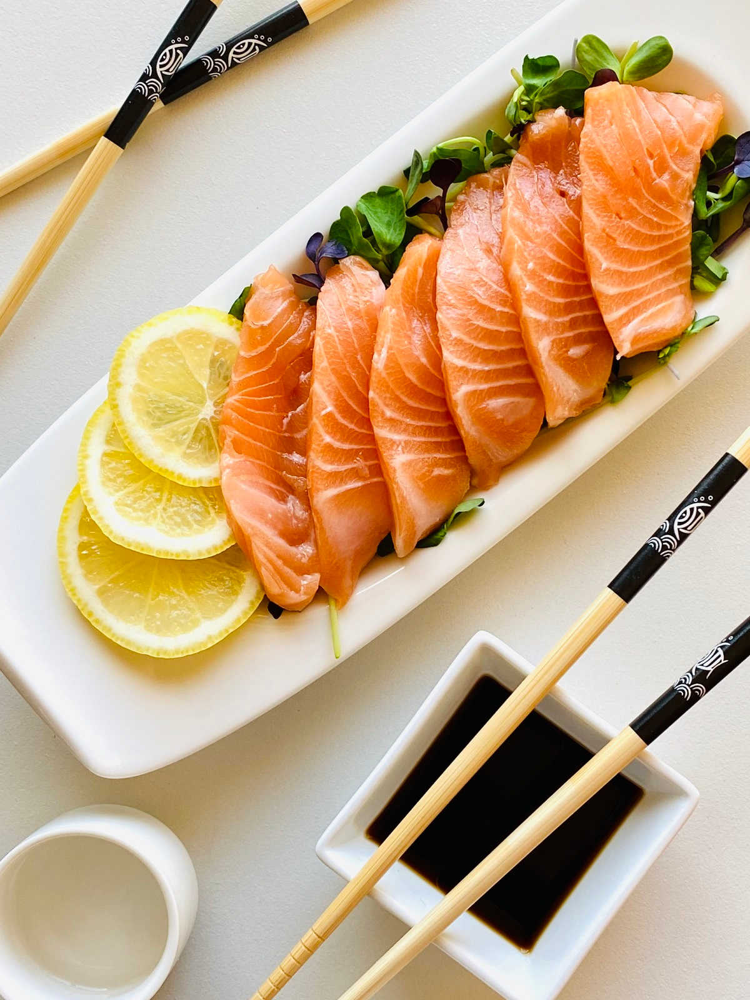

Salmon Sashimi

This salmon sashimi is a delicious and light appetizer or dinner preparation.
Served with fresh wasabi, ginger,
soy sauce or a delicious side of soy yuzo citrus ponzu.
Salmon sashimi calories are quite reasonable at only 52 calories per oz.
An average serving size of sashimi can range from 5-8 pieces with each piece ranging
from 0.5 to 1 oz.
Ingredients
- Soy Sauce
- Ponzu Sauce
- Garlic (Optional)
- Wasabi
- Lemon Juice
- Microgreens
- Lemon
- Pickled Ginger
Steps
- Slice salmon fish into thin slices (sashimi style, about ¼ inch thick or your preference).
Slices should be rectangular shape. This also works for tuna sashimi and spicy salmon sashimi.
- Mix soy sauce and citrus yuzu ponzu sauce for a delicious dipping sauce.
They can also be used as separate dipping sauces. If you would like to make garlic ponzu sauce,
you can add a pinch of pressed or finely minced garlic to your ponzu.
This yuzi was made popular by Nobu.
You can also add a splash of rice vinegar or sesame oil for some extra layers of flavor.
- Mix soy sauce, wasabi and lemon juice for a delicious dipping sauce.
The lemon juice is not traditional but it adds a nice tart flavor.
- Wasabi and pickled ginger may also be served as a side.
- How to cut: The first trick to cutting salmon sashimi or smoked salmon sashimi
is to be sure that your knife is well sharpened. You might also consider purchasing
a sushi knife if you want to make sushi or sashimi more frequently.
Be sure that you have a very stable base to cut your fish and that the cutting board will not slide.
Slice salmon fish into thin rectangular slices about ¼ inch thick or your preference) for this salmon sashimi recipe.
This type of slice is used for tuna sashimi, albacore sashimi and yellowtail tuna sashimi.
"
Back to HOME